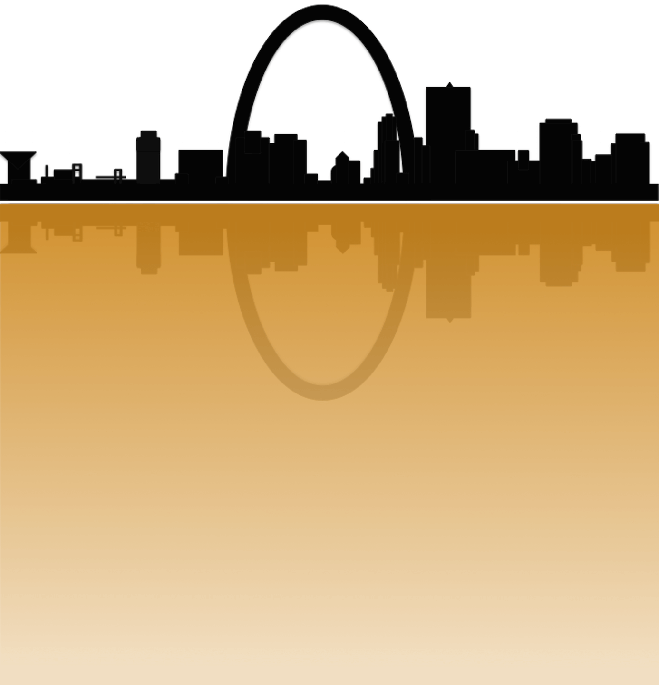

Climate change, flooding and contamination in the River City
St. Louis, or the ''River City,'' and its surrounding counties have some of the richest history in all of North America1, in large part due to the resources provided by the major river systems that come together in this area. However, the same waterways upon which St. Louis is built also cause semi-regular catastrophic flooding events, and climate models predict that the intensity and frequency of these extreme floods will increase over the next 50-100 years2. Moreover, St. Louis has a legacy of being one of the most heavily contaminated urban areas in the country3-5. The region is host to hundreds of millions of pounds of chemical, heavy metal, and radioactive waste from industrial activity. More frequent flooding and other extreme weather events will likely increase exposure risks to the people of St. Louis with negative impacts on public health.
Mission
This site was created to highlight the importance of including potential exposure risks to contamination in our strategies for adaptation to climate change in St. Louis. It is intended to serve as a resource to residents interested in understanding where the greatest potential risks of exposure are in case of future flooding events. As such, this site contains a series of maps that show locations of floodplain contamination sites in relation to where St. Louisans live, work, and play. Our hope is that these maps will help government and land managers prioritize clean-up of the most heavily contaminated and populated areas within the floodplain in order to minimize exposure risks to the people of St. Louis.